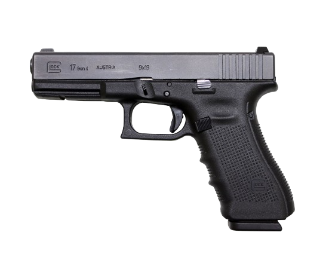

SEMI-AUTOMATIC PISTOL01
Glock 17
A full-size service pistol developed in Austria and introduced in the early 1980s.
- Type
- Semi-automatic pistol
- Caliber
- 9×19mm Parabellum
- Country of origin
- Austria
- Manufacturer
- Glock
- Introduced
- 1982